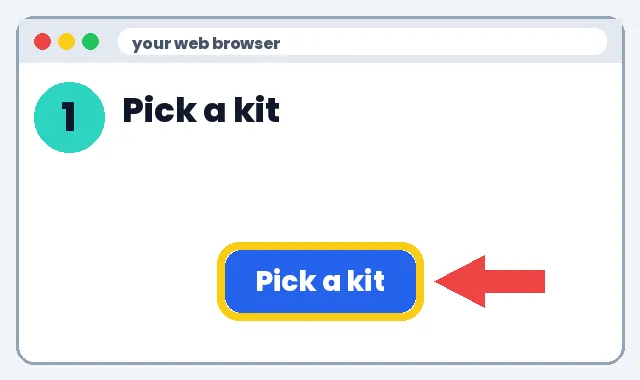
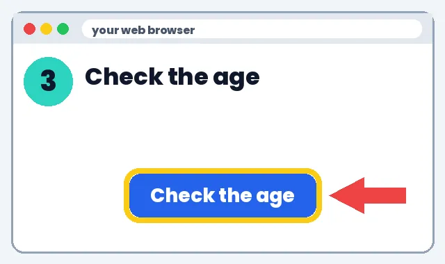
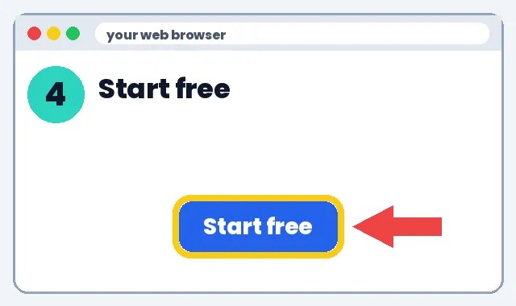

🚀 How to Pick Cool Tech for Kids
Kits and gadgets you can use to teach kids coding and STEM.
1️⃣ What it can do
🔌Pocket computers
🤖Coding robots
🧱Build & code kits
⚡Circuit kits
2️⃣ How to make it
👉 Show me the steps
1
Pick a kit
Look at the buttons. Each shows an age.

2
Click it
The maker's page opens.

3
Check the age
Make sure it fits your child or class.

4
Start free
Try the free coding site first, like MakeCode.

🎉 You did it! Great job.
3️⃣ What to do next
Pick one link below and try it this week. Start small: one tool, one lesson, 10 minutes.
Learn more
MakeCode for micro:bitFree block coding · 8+Raspberry Pi FoundationCoding projects · 10+Sphero robotsCoding robots · 4+ to teensLEGO EducationBuild & code kits · 4+OsmoHands-on learning games · 3–10KiwiCoSTEM crates · all agesSnap Circuits (Elenco)Electronics kits · 8+Amazon Kids tabletsKid-safe tablets · 3–12
Ages are rough guides; check each maker.
📚 Choosing kits by age (for teachers & parents)
No tech experience needed. We'll show you every click.
Learn more
What these kits teach
1️⃣ What it can do
- Problem solving, coding logic and building, often without a chatbot.
- Hands-on, so screen time is purposeful.
2️⃣ How to make it
- Ages 4–7: start with screen-light kits (LEGO Education, Osmo) or unplugged coding games.
- Ages 8–12: micro:bit with free MakeCode blocks, or Scratch.
- Teens: Raspberry Pi projects or Python.
- Check the free online lessons before buying anything.
- Many schools and libraries lend kits; ask first.
Kit lessonPlan a 30-minute beginner micro:bit lesson for 9-year-olds using MakeCode blocks, with step-by-step instructions a non-techie adult can follow.
3️⃣ What to do next
💰 Save money: discounts
- Khan Academy: Free lessons and practice
- Khan Academy Kids: Free learning app for ages 2-8
- PBS KIDS for Parents: Free tips and activities
- PBS KIDS: Free games and videos for young kids
- Libby (library app): Free e-books and audiobooks with a library card
See all deals for teachers & parents
Deals change, check the site. No affiliate links: we earn nothing from these.